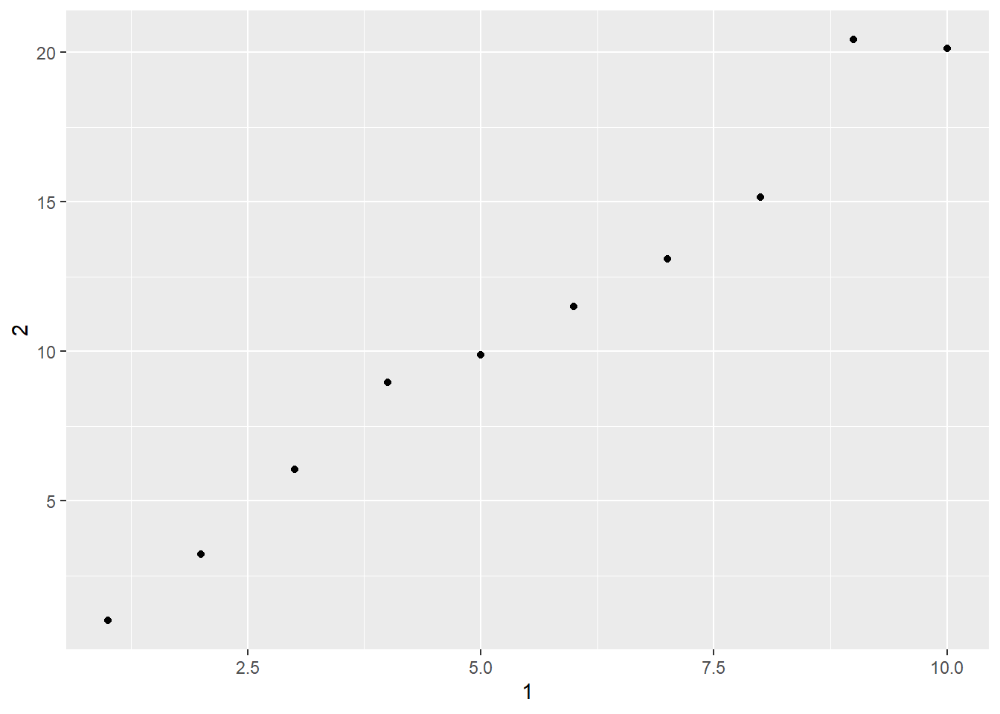

2 Dataframe, Tibble and Factor
2.1 Data Frame
데이터 프레임은 R의 핵심적인 자료구조이다. 엑셀과 같이 숫자, 문자 등 다양한 데이터를 하나의 테이블에 담을 수 있는 자료구조이다. 이를 잘 활용하면 엑셀의 기능들을 R에서도 자유자제로 사용할 수 있다.
2.1.1 데이터 프레임의 생성
2.1.1.1 data.frame()함수 이용
먼저 데이터 데이터 프레임을 생성하는 방법은 다음과 같다.
## col1 col2
## 1 a 2
## 2 b 4
## 3 c 6
## 4 d 8
## 5 e 10df의 데이터 내용 보기
1) R Studio의 Global Environment의 Data에서 마우스로 df를 클릭하는 방법
2) View(df)2.1.1.2 data.frame() 함수의 형식
data.frame(...,
row.names = NULL,
check.rows = FALSE,
check.names = TRUE,
fix.empty.names = TRUE,
stringsAsFactors = default.stringsAsFactors())`주요 인수 :
...: 이 인수는 폼 값이나tag = value형태이다. 구성 요소명(컬럼 명)은 tag 이름으로 또는 deparsed 인수 자체로 생성된다.row.names =:NULL, 단일 정수, 또는 행 이름으로 사용될 컬럼을 지정하는 문자열, 또는 데이터 프레임을 위한 행 이름을 주는 문자 또는 정수 벡터check.rows =:FALSE값이 디폴트 값.TRUE이면, 행들에 대한 길이와 이름에 대한 일관성 검토하고 위배되면 데이터 프레임을 생성하지 않는다.check.names =: 논리값.TRUE이면 데이터 프레임에 있는 변수 이름들이 문법적으로 타당하고 증복이 없는 변수 이름들인지 검토한다. 필요하면 (make.names에 의해) 조정된다.fix.empty.names =: 논리값 이름이 붙여지지 않은 컬럼(someName = arg형태로 지정되지 않으면)이 자동으로 생성된 이름이나name”.”을 가지고 있는지를 나타내는 논리값. “” 이름이 유지되어야 하지만 check.names가 false일 때에도 FALSE로 설정되어야 한다.stringsAsFactors = default.stringsAsFactors(): 버전 4.0.0 이후로 기능이 없어짐. 이전 버전의 경우, 디폴트로 문자 벡터 컬럼의 경우 factor 형으로 생성되었음.
2.1.1.3 컬럼명을 지정하지 않은 경우
## 'data.frame': 5 obs. of 2 variables:
## $ X1.5 : int 1 2 3 4 5
## $ letters.1.5.: chr "a" "b" "c" "d" ...## X1.5 letters.1.5.
## 1 1 a
## 2 2 b
## 3 3 c
## 4 4 d
## 5 5 edf1의 첫 번째 컬럼의 값은1:5, 두 번째 컬럼의 값은letters[1:5]으로 지정하고 있으나, 컬럼명을 지정하지 않음.- 자동으로 첫 번째 컬럼명은
x1.5으로 그리고 두 번째 컬럼명은letters.1.5으로 자동생성된다.
## 'data.frame': 5 obs. of 2 variables:
## $ : int 1 2 3 4 5
## $ : chr "a" "b" "c" "d" ...##
## 1 1 a
## 2 2 b
## 3 3 c
## 4 4 d
## 5 5 efix.empty.names = FALSE옵션을 설정하면, 컬럼명이 자동생성되지 않고 공란(“”)으로 남는다.
2.1.1.4 컬럼명을 지정한 경우
## 'data.frame': 5 obs. of 2 variables:
## $ a: int 1 2 3 4 5
## $ b: chr "a" "b" "c" "d" ...## a b
## 1 1 a
## 2 2 b
## 3 3 c
## 4 4 d
## 5 5 edf3는 데이터 값과 더불어 각 컬럼의 이름(a와b)을 지정하여 생성되었다.
2.1.1.5 row.names을 a로 지정한 경우
## 'data.frame': 5 obs. of 1 variable:
## $ b: chr "a" "b" "c" "d" ...## b
## 1 a
## 2 b
## 3 c
## 4 d
## 5 edf4는row.names = “a”로a를 행이름으로 지정하고 있다. 따라서df4를 출력해 보면a의 값(1:5)들이 행의 이름임을 알 수 있다.- 즉,
df4는 컬럼이 하나인 데이터 프레임이다.
2.1.1.6 row.names을 b로 지정한 경우
## 'data.frame': 5 obs. of 1 variable:
## $ a: int 1 2 3 4 5## a
## a 1
## b 2
## c 3
## d 4
## e 5df5는row.names = “b”로b를 행이름으로 지정하고 있다. 따라서df5를 출력해 보면b의 값들(letters[1:5])이 행의 이름임을 알 수 있다.- 즉,
df5는 컬럼이 하나인 데이터 프레임이다.
2.1.1.7 각 컬럼의 행의 길이가 다른 경우
다음과 같이 a컬럼은 요소가 6개, b컬럼은 요소가 5개로 지정되는 경우에는, 데이터 프레임이 생성되지 않는다. 즉, 데이터 세트가 사각형 형태가 안된다. 이러한 데이터 구조를 만들고 싶다면, 리스트 구조를 이용해야 한다.
## Error in data.frame(a = 1:6, b = letters[1:5]): arguments imply differing number of rows: 6, 5## Error in str(df6): 객체 'df6'를 찾을 수 없습니다## Error in eval(expr, envir, enclos): 객체 'df6'를 찾을 수 없습니다2.1.1.8 컬럼명이 같은 경우 : check.names = 인수의 사용
check.names = TRUE 인수를 사용하는 경우,
## 'data.frame': 5 obs. of 2 variables:
## $ a : int 1 2 3 4 5
## $ a.1: chr "a" "b" "c" "d" ...## a a.1
## 1 1 a
## 2 2 b
## 3 3 c
## 4 4 d
## 5 5 e- 두 개의 컬럼명이 모두
a로 되어 있다.df7의 경우는check.names = TRUE로 옵션을 설정하여, 컬럼명이 자동 조정되었다.
check.names = FALSE 인수를 사용하는 경우,
## 'data.frame': 5 obs. of 2 variables:
## $ a: int 1 2 3 4 5
## $ a: chr "a" "b" "c" "d" ...## a a
## 1 1 a
## 2 2 b
## 3 3 c
## 4 4 d
## 5 5 e- 두 개의 컬럼명이 모두
a로 되어 있다.df8의 경우는check.names = FASLE로 옵션을 설정하여, 컬럼명이 조정되지 않았다.
2.1.2 데이터 프레임의 구조
데이터 프레임의 구조는 str() 함수로 파악할 수 있다.
2.1.2.1 dataframe의 구조(structure) 파악하기
str() 함수에 대한 도움말 보기.
## starting httpd help server ... done앞에서 생성한 df1 데이터 보기 : head() 함수 이용
## X1.5 letters.1.5.
## 1 1 a
## 2 2 b
## 3 3 c
## 4 4 d
## 5 5 edf1의 데이터 구조 파악하기 : str() 함수
## 'data.frame': 5 obs. of 2 variables:
## $ X1.5 : int 1 2 3 4 5
## $ letters.1.5.: chr "a" "b" "c" "d" ...df1의 통계적 요약 정보 파악 : summary() 함수
## X1.5 letters.1.5.
## Min. :1 Length:5
## 1st Qu.:2 Class :character
## Median :3 Mode :character
## Mean :3
## 3rd Qu.:4
## Max. :52.1.2.2 iris 데이터 세트
iris 데이터 세트의 데이터 구조 확인
## 'data.frame': 150 obs. of 5 variables:
## $ Sepal.Length: num 5.1 4.9 4.7 4.6 5 5.4 4.6 5 4.4 4.9 ...
## $ Sepal.Width : num 3.5 3 3.2 3.1 3.6 3.9 3.4 3.4 2.9 3.1 ...
## $ Petal.Length: num 1.4 1.4 1.3 1.5 1.4 1.7 1.4 1.5 1.4 1.5 ...
## $ Petal.Width : num 0.2 0.2 0.2 0.2 0.2 0.4 0.3 0.2 0.2 0.1 ...
## $ Species : Factor w/ 3 levels "setosa","versicolor",..: 1 1 1 1 1 1 1 1 1 1 ...iris 데이터 세트의 첫 6개 행 데이터 보기
## Sepal.Length Sepal.Width Petal.Length Petal.Width Species
## 1 5.1 3.5 1.4 0.2 setosa
## 2 4.9 3.0 1.4 0.2 setosa
## 3 4.7 3.2 1.3 0.2 setosa
## 4 4.6 3.1 1.5 0.2 setosa
## 5 5.0 3.6 1.4 0.2 setosa
## 6 5.4 3.9 1.7 0.4 setosahead(iris, n=10):iris데이터 세트의 첫 10개 행을 볼 수 있다.n =인수로 행의 갯수를 조절할 수 있다.tail(iris, n=10):iris데이터 세트의 마지막 10개 행을 볼 수 있다.n =인수로 행의 갯수를 조절할 수 있다.
iris 데이터 세트의 통계적 요약 정보
## Sepal.Length Sepal.Width Petal.Length Petal.Width
## Min. :4.300 Min. :2.000 Min. :1.000 Min. :0.100
## 1st Qu.:5.100 1st Qu.:2.800 1st Qu.:1.600 1st Qu.:0.300
## Median :5.800 Median :3.000 Median :4.350 Median :1.300
## Mean :5.843 Mean :3.057 Mean :3.758 Mean :1.199
## 3rd Qu.:6.400 3rd Qu.:3.300 3rd Qu.:5.100 3rd Qu.:1.800
## Max. :7.900 Max. :4.400 Max. :6.900 Max. :2.500
## Species
## setosa :50
## versicolor:50
## virginica :50
##
##
## - 5개의 컬럼별로 통계적 요약 정보인 min, 1st Qu., Median, Mean, 3rd Qu., Max. 등의 요약 정보를 출력한다.
2.1.3 행/열 추가하기
2.1.3.1 두 벡터를 각각 행(row)으로 하는 데이터 프레임의 생성
두 개의 벡터 데이터 세트
두 벡터를 결합하여 데이터 프레임 만들기
## X1 X2 X3
## vec1 one two three
## vec2 1 2 3## 'data.frame': 2 obs. of 3 variables:
## $ X1: chr "one" "1"
## $ X2: chr "two" "2"
## $ X3: chr "three" "3"- 데이터 프레임
d의 행 이름은 자동으로 벡터의 이름(vec1,vec2)으로 지정된다. - 반면에 컬럼 이름은
x1,x2,x3등으로 자동 부여된다.
2.1.3.2 두 벡터를 각각 열(column)으로 하는 데이터 프레임의 생성
이번에는, 두 벡터를 각각 column으로 하는 dataframe을 만들고 싶으면? : cbind()
두 개의 벡터 데이터 세트
## [1] "one" "two" "three"## [1] 1 2 3cbind()를 이용하여 두 개 벡터를 컬럼으로 결합하여 vec 데이터 세트를 만든다.
## vec1 vec2
## [1,] "one" "1"
## [2,] "two" "2"
## [3,] "three" "3"## [1] "matrix" "array"vec는 문자형 행렬/배열 임을 알 수 있다.
결합된 vec 데이터 세트를 data.frame() 함수를 이용하여 데이터 프레임으로 바꾼다.
## vec1 vec2
## 1 one 1
## 2 two 2
## 3 three 3## 'data.frame': 3 obs. of 2 variables:
## $ vec1: chr "one" "two" "three"
## $ vec2: chr "1" "2" "3"- 생성된 df의 컬럼 이름은 두 개의 벡터 이름이 자동으로 지정된다.
앞에서 cbind()의 사용은 사족
두 개의 벡터 데이터 세트
## [1] "one" "two" "three"## [1] 1 2 3cbind()를 이용하여 두 개 벡터를 컬럼으로 결합하여 vec 데이터 세트를 만드는 과정을 생략하고,
data.frame() 함수에 두 개의 벡터를 입력하여 데이터 프레임을 생성할 수 있다.
## vec1 vec2
## 1 one 1
## 2 two 2
## 3 three 3## 'data.frame': 3 obs. of 2 variables:
## $ vec1: chr "one" "two" "three"
## $ vec2: num 1 2 3vec1컬럼은 문자형(chr)으로 생성이 되었고,vec2컬럼은 숫자형(num)으로 생성이 됨을 알 수 있다.
문자형 컬럼을 factor형으로 만들고 싶은 경우에는 stringsAsFactors = T를 인수로 이용한다.
## vec1 vec2
## 1 one 1
## 2 two 2
## 3 three 3## 'data.frame': 3 obs. of 2 variables:
## $ vec1: Factor w/ 3 levels "one","three",..: 1 3 2
## $ vec2: num 1 2 3- vec1 컬럼의 데이터 유형이
Factor로 바뀌었다.
2.1.3.3 데이터 프레임에 새로운 컬럼 추가
다음과 같이 새로운 컬럼을 추가할 수도 있다.
## col1 col2 col3
## 1 a 2 1
## 2 b 4 2
## 3 c 6 3
## 4 d 8 4
## 5 e 10 5df$col3 <- c(1,2,3,4,5): 2개의 컬럼으로 구성된df1에col3컬럼을 추가한다. 그 값은 c(1, 2, 3, 4, 5).
2.1.3.4 데이터 프레임의 컬럼 삭제
다음과 같이 기존의 컬럼을 제거할 수 있다.
## col1
## 1 a
## 2 b
## 3 c
## 4 d
## 5 e- 제거하고자 하는 컬럼의 값을
NULL로 대입해 주면 된다.
2.1.4 행과 열 접근하기
2.1.5 연습문제
R에 기본 내장되어 있는 iris 데이터를 활용하여 아래 질문에 답하시오.
## Sepal.Length Sepal.Width Petal.Length Petal.Width Species
## 1 5.1 3.5 1.4 0.2 setosa
## 2 4.9 3.0 1.4 0.2 setosa
## 3 4.7 3.2 1.3 0.2 setosa
## 4 4.6 3.1 1.5 0.2 setosa
## 5 5.0 3.6 1.4 0.2 setosa
## 6 5.4 3.9 1.7 0.4 setosa- 첫번째, 3번째 컬럼을 선택하시오.
## Sepal.Length Petal.Length
## 1 5.1 1.4
## 2 4.9 1.4
## 3 4.7 1.3
## 4 4.6 1.5
## 5 5.0 1.4
## 6 5.4 1.7- 3번째 컬럼을 빼고 선택하시오.
## Sepal.Length Sepal.Width Petal.Width Species
## 1 5.1 3.5 0.2 setosa
## 2 4.9 3.0 0.2 setosa
## 3 4.7 3.2 0.2 setosa
## 4 4.6 3.1 0.2 setosa
## 5 5.0 3.6 0.2 setosa
## 6 5.4 3.9 0.4 setosa- 각 row의
Sepal.Length와Sepal.Width의 값을 더하여Sepal.Sum이라는 컬럼을 추가하시오.
## Sepal.Length Sepal.Width Petal.Width Species Sepal.Sum
## 1 5.1 3.5 0.2 setosa 8.6
## 2 4.9 3.0 0.2 setosa 7.9
## 3 4.7 3.2 0.2 setosa 7.9
## 4 4.6 3.1 0.2 setosa 7.7
## 5 5.0 3.6 0.2 setosa 8.6
## 6 5.4 3.9 0.4 setosa 9.3참고) df[1,] 과 df[1, ,drop=T]의 차이는?
## col1 col2
## 1 a 2## [1] "data.frame"df[1,]:df의 첫 번째 행을 출력. 그 결과는 데이터 프레임
## $col1
## [1] "a"
##
## $col2
## [1] 2## [1] "list"df[1, , drop=T]:df의 첫 번째 행을 출력하되,drop=T에 의해 그 결과를 list로 출력함.
2.1.6 행과 열의 이름 지정하기
2.1.6.3 컬럼 이름 변경하기
## [1] "열1" "열2" "열3"colnames(df) <- c('열1','열2','열3'): 새로운 컬럼명 지정하기
2.1.7 데이터 타입 변환
2.1.7.1 데이터 타입‘만’ 알고 싶을때 : class() 함수
데이터 타입은 class() 함수로 확인할 수 있다.
숫자형 벡터
## [1] "numeric"문자형 벡터
## [1] "character"논리형 벡터
## [1] "logical"날짜형 벡터
## [1] "Date"- 문자형의 날짜를 as.Date() 함수를 이용하여 날짜형(Date)로 변경해야 함.
행렬
## [1] "matrix" "array"- 행렬은 배열의 특수한 형태임.
리스트
## [1] "list"- list() 함수에 의해 데이터 구조가 리스트로 지정됨.
데이터 프레임
## [1] "data.frame"2.1.7.2 데이터 타입과 데이터 모양에 대한 추가정보까지 : str() 함수
str() 함수는 데이터의 구조에 대한 요약 정보를 보여준다.
2.1.7.2.1 숫자형 벡터
## num [1:2] 1 2- 데이터 유형(
num)과 요소의 갯수([1:2]), 그리고 데이터 값(1 2) 등을 확인할 수 있다.
2.1.7.2.2 행렬
## num [1:2, 1] 1 2- 데이터 유형(
num), 요소의 갯수([1:2, 1]), 여기서 행의 갯수는[1:2], 열의 갯수가1개 임., 그리고 데이터 값(1 2) 등을 확인할 수 있다.
2.1.7.2.3 리스트
## List of 1
## $ : num [1:2] 1 2List of 1: 데이터 구조가List'형, 컬럼의 갯수는1`개$ : num [1:2] 1 2: 컬럼 명이 지정되어 있지 않으며($다음에 컬럼 이름이 표시됨), 데이터 유형은 num, 요소의 갯수는 [1:2], 실제 데이터는1 2
2.1.7.2.4 데이터 프레임
## 'data.frame': 1 obs. of 2 variables:
## $ X1: num 1
## $ X2: num 2'data.frame': 1 obs. of 2 variables:: 데이터 구조는data.frame, 행의 갯수는 1개(1 obs.), 열의 갯수는 2개(2 variables)$ X1: num 1: 첫 번째 열은X1($ X1), 이 열의 데이터 유형은 숫자형(num), 값은1$ X2: num 2: 두 번째 열은X2($ X2), 이 열의 데이터 유형은 숫자형(num), 값은2
2.1.7.3 데이터 유형만 확인
2.1.7.3.1 숫자형 확인 : is.numeric() 함수
숫사형 벡터의 확인
## [1] TRUE문자형 벡터의 확인
## [1] FALSE2.1.7.3.3 관련 함수들
다음 함수들을 사용하여 데이터 타입을 손쉽게 판단할 수 있다.
| 함수 | 설명 |
|---|---|
is.factor(x) |
주어진 객체 x가 팩터인가 |
is.numeric(x) |
주어진 객체 x가 숫자를 저장한 벡터인가 |
is.character(x) |
주어진 객체 x가 문자열을 저장한 벡터인가 |
is.matrix(x) |
주어진 객체 x가 행렬인가 |
is.array(x) |
주어진 객체 x가 배열인가 |
is.data.frame(x) |
주어진 객체 x가 데이터 프레임인가 |
2.1.7.4 데이터 구조간의 변환
2.1.7.4.3 matrix를 데이터 프레임으로
## X1 X2
## 1 1 3
## 2 2 42.1.7.4.4 벡터를 factor로, factor를 벡터
문자열을 Factor로
## [1] m f
## Levels: f mLevels로 Factor임을 확인함.
Factor를 다시 숫자형으로
## [1] 2 1타입을 강제로 변환(Coercing)하고자 할 때도 있을 것이다.
문자열 벡터를 팩터로 변환하는 경우 등이 그 예다.
이러한 변환을 하는 한 가지 방법은 타입 이름이 ‘typename’이라 할 때 ‘as.typename( )’이라는 함수를 사용하는 것이다.
2.1.7.4.5 관련 함수 목록
다음에 관련 함수의 목록을 보였다.
| 함수 | 의미 |
|---|---|
as.factor(x) |
주어진 객체 x를 팩터로 변환 |
as.numeric(x) |
주어진 객체 x를 숫자를 저장한 벡터로 변환 |
as.character(x) |
주어진 객체 x를 문자열을 저장한 벡터로 변환 |
as.matrix(x) |
주어진 객체 x를 행렬로 변환 |
as.array(x) |
주어진 객체 x를 배열로 변환 |
as.data.frame(x) |
주어진 객체 x를 데이터 프레임으로 변환 |
2.1.8 연습문제
남,여를1,2로 바꿔보자
## [1] "여" "남" "여" "여" "남"참고 : 남, 여를 2, 1 로 바꾸면?
## [1] 2 1 2 2 12.1.9 실습 과제
첨부한 파일을 다운 받고 R에서 변수 data로 불러들여라.
##
## -- Column specification --------------------------------------------------------
## cols(
## Id = col_double(),
## Model = col_character(),
## Price = col_double(),
## Age = col_double(),
## Mfg_Month = col_double(),
## Mfg_Year = col_double(),
## KM = col_double(),
## Fuel_Type = col_character()
## )## # A tibble: 7 x 8
## Id Model Price Age Mfg_Month Mfg_Year KM Fuel_Type
## <dbl> <chr> <dbl> <dbl> <dbl> <dbl> <dbl> <chr>
## 1 1 TOYOTA Corolla 2.0 D4D H~ 13500 23 10 2002 46986 Diesel
## 2 2 TOYOTA Corolla 2.0 D4D H~ 13750 23 10 2002 72937 Diesel
## 3 3 TOYOTA Corolla 2.0 D4D H~ 13950 24 9 2002 41711 Diesel
## 4 4 TOYOTA Corolla 2.0 D4D H~ 14950 26 7 2002 48000 Diesel
## 5 5 TOYOTA Corolla 2.0 D4D H~ 13750 30 3 2002 38500 Diesel
## 6 6 TOYOTA Corolla 2.0 D4D H~ 12950 32 1 2002 61000 Diesel
## 7 7 ?TOYOTA Corolla 2.0 D4D ~ 16900 27 6 2002 94612 Diesel2.1.10 apply() 함수 이해하기
- 행렬 혹은 data.frame에서 각 row, column에 대해 평균을 계산한다든지, 특정 함수를 적용하고 싶을 때가 있다.
- 이럴 때, 가장 기본적으로 생각하는 게
for()loop를 활용하여 각 row(혹은 column) 별로 함수를 적용하는 것이다.
예를 들어,
mat <- matrix(c(1,2,3,4,5,6,7,8,9), nrow=3)
# 각 row의 평균을 계산하고 싶다면
for (i in seq(1:nrow(mat))){
print(mean(mat[i,]))
}## [1] 4
## [1] 5
## [1] 6그런데 많은 양의 데이터를 for() loop 하는 것은 비효율적이다.
- 매번
for()loop를 돌 때마다 함수를 불러와야 하기 때문이다. - 따라서 최대한
for()loop를 줄이는 것이 중요하다!! - 그 때 사용하는 함수가 바로
apply()함수이다. apply()함수는 한 번만 함수를 불러와서 모든 데이터에 적용하기 때문에 훨씬 시간을 줄일 수 있다.
2.1.10.1 데이터 세트
2.1.10.2 행별로 함수 적용 : margin = 1
mat 데이터 세트의 행별(1) 평균값(mean) 산출
## [1] 4 5 6mat 데이터 세트의 행별(1) 범위(range) 산출
## [,1] [,2] [,3]
## [1,] 1 2 3
## [2,] 7 8 92.1.10.3 열별로 함수 적용 : margin = 2
mat 데이터 세트의 열별(2) 평균값(mean) 산출
## [1] 2 5 82.1.11 연습문제
iris 데이터 세트에 적용해보자
apply()함수를 활용하여iris의Species를 제외한 4개 변수에 대해 평균을 아래와 같이 계산하라.
## Sepal.Length Sepal.Width Petal.Length Petal.Width
## 5.843333 3.057333 3.758000 1.199333apply()함수를 활용하여Sepal.Length,Sepal.Width의 최소, 최대값을 아래와 같이 구하라. (최소, 최댓값을 구하는 함수는range)
## Sepal.Length Sepal.Width
## [1,] 4.3 2.0
## [2,] 7.9 4.42.1.11.1 list, 벡터에 대한 for loop 계산
- 데이터 프레임과 마찬가지로 list, vector에 대해서도
for()loop를 최소화 하는 것이 좋다. - 대신,
apply()와 비슷하게lapply(),sapply()를 사용한다. - 좀 더 구체적으로 예를 들어보면,
list(1,2,3)을 제곱한 값을 반환하고 싶다고 하자. - 그런데 아래와 같이 계산하면 실행이 안 된다. list는 vector처럼 연산 함수가 적용되지 않기 떄문이다.
2.1.11.2 lapply() 함수와 sapply() 함수
이럴 때, for() loop이 아닌 lapply() 함수 또는 sapply()함수를 사용한다.
`lapply(벡터 혹은 리스트, 함수)`
`sapply(벡터 혹은 리스트, 함수)`2.1.11.2.1 lapply() 함수
앞에 예를 들었듯이, list(1,2,3)을 제곱하고 싶다면,
## [[1]]
## [1] 1
##
## [[2]]
## [1] 4
##
## [[3]]
## [1] 92.1.11.2.2 sapply() 함수
그런데 lapply()의 결과는 list로 나오기 때문에, 벡터로 나오게 하고 싶다면 sapply()를 이용한다.
## [1] 1 4 92.1.11.2.3 iris 데이터 세트의 예
lapply() 함수를 이용하여, 모든 행에 대하여 1:4열의 합계(sum)를 구한다.
## [1] "list"sapply() 함수를 이용하여, 모든 행에 대하여 1:4열의 합계(sum)를 구한다.
## [1] "numeric"lapply(),sapply()도 data.frame 에 적용할 수 있는데,apply()는 결과값이 data.frame인 반면,lapply(),sapply()는 결과값이 각각 list, vector 라는 차이가 있다.- 그리고 기본적으로 각 column에 대해 함수가 적용된다.
좀 더 예를 들면,
iris 데이터 세트의 각 열의 데이터 타입을 보고 싶다면?
## Sepal.Length Sepal.Width Petal.Length Petal.Width Species
## "numeric" "numeric" "numeric" "numeric" "factor"3보다 큰 값을 갖는지 확인
## Sepal.Length Sepal.Width Petal.Length Petal.Width
## [1,] TRUE TRUE FALSE FALSE
## [2,] TRUE FALSE FALSE FALSE
## [3,] TRUE TRUE FALSE FALSE
## [4,] TRUE TRUE FALSE FALSE
## [5,] TRUE TRUE FALSE FALSE
## [6,] TRUE TRUE FALSE FALSE2.1.12 연습문제
- iris 데이터를 0~1 사이 값으로 바꿔라.
hint: 서로 다른 변수의 데이터가 scale이 다를 경우(어떤 변수는 -10~0 사이인데, 다른 변수는 10~1000인 경우), 정규분포를 활용한 정규화 뿐만 아니라, min, max를 활용하여 0~1사이로 바꾸는 방법도 있다. 즉, 다음 함수를 각 row에 적용하면 된다. (x−min(x)) / (max(x)−min(x))
## Sepal.Length Sepal.Width Petal.Length Petal.Width
## 4.3 2.0 1.0 0.1## Sepal.Length Sepal.Width Petal.Length Petal.Width
## 7.9 4.4 6.9 2.5## Sepal.Length Sepal.Width Petal.Length Petal.Width
## 3.6 2.4 5.9 2.4## Sepal.Length Sepal.Width Petal.Length Petal.Width
## [1,] 0.22222222 0.6250000 0.06779661 0.04166667
## [2,] 0.16666667 0.4166667 0.06779661 0.04166667
## [3,] 0.11111111 0.5000000 0.05084746 0.04166667
## [4,] 0.08333333 0.4583333 0.08474576 0.04166667
## [5,] 0.19444444 0.6666667 0.06779661 0.04166667
## [6,] 0.30555556 0.7916667 0.11864407 0.125000002.1.13 apply() 함수의 사촌들
이제부터는 apply() 함수와 비슷한 원리지만, 각 상황에 맞게 tapply(), mapply() 가 있는데, 자주 사용되지는 않지만, 간단히 살펴보기로 한다.
2.1.13.1 tapply()
tapply() : 각 집단에 따라 데이터를 처리하고 싶을때
## 'data.frame': 150 obs. of 5 variables:
## $ Sepal.Length: num 5.1 4.9 4.7 4.6 5 5.4 4.6 5 4.4 4.9 ...
## $ Sepal.Width : num 3.5 3 3.2 3.1 3.6 3.9 3.4 3.4 2.9 3.1 ...
## $ Petal.Length: num 1.4 1.4 1.3 1.5 1.4 1.7 1.4 1.5 1.4 1.5 ...
## $ Petal.Width : num 0.2 0.2 0.2 0.2 0.2 0.4 0.3 0.2 0.2 0.1 ...
## $ Species : Factor w/ 3 levels "setosa","versicolor",..: 1 1 1 1 1 1 1 1 1 1 ...## setosa versicolor virginica
## 5.006 5.936 6.5882.1.14 연습문제
Species별Sepal.Width의 분산은?
## setosa versicolor virginica
## 0.14368980 0.09846939 0.104004082.1.14.1 mapply()
여러 벡터에 동일한 함수를 적용하고 싶을때 사용한다. 아래와 같이 최대공약수를 구하는 함수 gcd()가 있다고 하자.
## [1] 2그러나, 아래와 같이 두 벡터의 각 원소간 값을 input으로 하고 싶을때 아래와 같은 문법은 오류가 발생합니다.
## Warning in if (b == 0) return(a) else return(gcd(b, a%%b)): length > 1 이라는 조
## 건이 있고, 첫번째 요소만이 사용될 것입니다
## Warning in if (b == 0) return(a) else return(gcd(b, a%%b)): length > 1 이라는 조
## 건이 있고, 첫번째 요소만이 사용될 것입니다
## Warning in if (b == 0) return(a) else return(gcd(b, a%%b)): length > 1 이라는 조
## 건이 있고, 첫번째 요소만이 사용될 것입니다## [1] 3 6 9이 경우 mapply() 함수 활용
## [1] 3 3 9**최대공약수 함수** : 여기서 중요한 부분은 “**유클리드 호제법**”이다.
간단히 말하자면, "**두 양의 정수 A >= B에 대해, A가 B의 배수인 경우에 최대공약수는 B이며, 그렇지 않은 경우에는 최대공약수는 B와 A%%B (A를 B로 나눈 나머지)의 최대공약수이다.**"라고 할 수 있습니다.
이를 코드로 표현하면 다음과 같다.gcd <- function(a,b) {
if (b==0) return(a)
else return(gcd(b, a%%b))
}출처: https://kjwsx23.tistory.com/259 [香格里拉]
[참고 : Sampling]
기계학습 모델링을 사용하다 보면, 무작위로 데이터를 추출해야 할 경우가 생긴다. 이럴 때 sample() 함수를 사용한다.
## [1] 3 9 4 2 1## [1] 8 5 7 9 6iris 데이터에서 임의로 전체의 15% 데이터 추출하기
index <- 1:nrow(iris) # 1부터 iris 행의 개수
train_idx <- sample(index, round(nrow(iris)*0.15))
head(iris[train_idx,])## Sepal.Length Sepal.Width Petal.Length Petal.Width Species
## 128 6.1 3.0 4.9 1.8 virginica
## 74 6.1 2.8 4.7 1.2 versicolor
## 111 6.5 3.2 5.1 2.0 virginica
## 130 7.2 3.0 5.8 1.6 virginica
## 54 5.5 2.3 4.0 1.3 versicolor
## 99 5.1 2.5 3.0 1.1 versicolor출처: https://insightteller.tistory.com/entry/R-기초-실습-3-dataframe?category=628138 [Be a Insight teller]
Reference
2.2 tibble
티블(tibbles)은 데이터 프레임을 현대적으로 재구성한 것이다.
이것은 시간 성능 테스트를 통과했고,
데이터 프레임이 가지고 있던 편리했지만 지금은 불만스러운 특징들(예를 들어, 문자 벡터를 factor 형으로 변환하는 것)을 제거하고 있다.
티블은
tidyverse생태계를 구성하는 한 멤버로tidyverse를 설치하게 되면 즉시 활용할 수 있다.데이터프레임을 생성하고, 강제변환시키고, 외부 데이터를 데이터프레임으로 가져오는 방법에 사용되는 함수를 비교하면 다음과 같다.
| 작업유형 | 데이터프레임 명령어 | 티블 명령어 |
|---|---|---|
| 생성 | data.frame() |
data_frame(), tibble(), tribble() |
| 강제변환 (Coercion) | as.data.frame() |
as_tibble() |
| 데이터 불러오기 | read.*() |
read_delim(), read_csv(), read_csv2(), read_tsv() |
2.2.1 티블 생성
tibble()은 데이터 프레임을 생성하는 좋은 방법이다.- 데이터 프레임의 좋은 점들을 압축하고 있다.
tribble()함수를 사용해서 좀 더 직관적으로 데이터프레임을 생성할 수도 있다.
2.2.1.1 데이터 프레임과 티블 생성
2.2.1.1.1 데이터프레임(data.frame)의 생성 : data.frame() 함수
## 'data.frame': 5 obs. of 2 variables:
## $ X1.5 : int 1 2 3 4 5
## $ letters.1.5.: chr "a" "b" "c" "d" ...2.2.1.1.2 티블(tibble)**의 생성 : tibble() 함수
벡터 데이터 세트
## [1] 1 2 3 4 5## [1] "a" "b" "c" "d" "e"벡터 결합에 의한 티블의 생성
## # A tibble: 5 x 2
## a b
## <int> <chr>
## 1 1 a
## 2 2 b
## 3 3 c
## 4 4 d
## 5 5 e## tibble [5 x 2] (S3: tbl_df/tbl/data.frame)
## $ a: int [1:5] 1 2 3 4 5
## $ b: chr [1:5] "a" "b" "c" "d" ...티블의 생성
## # A tibble: 2 x 2
## a b
## <dbl> <chr>
## 1 1 a
## 2 2 b## tibble [2 x 2] (S3: tbl_df/tbl/data.frame)
## $ a: num [1:2] 1 2
## $ b: chr [1:2] "a" "b"~a, ~b: 컬럼의 지정#---|----: 컬럼 이름과 데이터 구분을 위해 삽입.#로 R은 주석 처리함.1, "a",: 이하는 데이터 값
2.2.1.2 데이터 프레임을 티블로 변환하기 : as_tibble() 함수
데이터프레임을 티블로 강제 변환해야 할 경우가 있다. as_tibble() 를 사용하면 된다.
## 'data.frame': 150 obs. of 5 variables:
## $ Sepal.Length: num 5.1 4.9 4.7 4.6 5 5.4 4.6 5 4.4 4.9 ...
## $ Sepal.Width : num 3.5 3 3.2 3.1 3.6 3.9 3.4 3.4 2.9 3.1 ...
## $ Petal.Length: num 1.4 1.4 1.3 1.5 1.4 1.7 1.4 1.5 1.4 1.5 ...
## $ Petal.Width : num 0.2 0.2 0.2 0.2 0.2 0.4 0.3 0.2 0.2 0.1 ...
## $ Species : Factor w/ 3 levels "setosa","versicolor",..: 1 1 1 1 1 1 1 1 1 1 ...## tibble [150 x 5] (S3: tbl_df/tbl/data.frame)
## $ Sepal.Length: num [1:150] 5.1 4.9 4.7 4.6 5 5.4 4.6 5 4.4 4.9 ...
## $ Sepal.Width : num [1:150] 3.5 3 3.2 3.1 3.6 3.9 3.4 3.4 2.9 3.1 ...
## $ Petal.Length: num [1:150] 1.4 1.4 1.3 1.5 1.4 1.7 1.4 1.5 1.4 1.5 ...
## $ Petal.Width : num [1:150] 0.2 0.2 0.2 0.2 0.2 0.4 0.3 0.2 0.2 0.1 ...
## $ Species : Factor w/ 3 levels "setosa","versicolor",..: 1 1 1 1 1 1 1 1 1 1 ...2.2.1.3 개별 벡터를 티블로 만들기
tibble()을 사용하여 개별 벡터로부터 새로운 티블을 만들 수 있다.tibble()은 길이가 1인 입력을 자동으로 재사용하며, 여기에서 보이는 것처럼, 방금 만든 변수를 참조할 수도 있다.
## # A tibble: 5 x 3
## x y z
## <int> <dbl> <dbl>
## 1 1 1 2
## 2 2 1 5
## 3 3 1 10
## 4 4 1 17
## 5 5 1 26- z 컬럼은 계산된 컬럼(computed column)이다.
2.2.1.4 tribble()로 티블 만들기
- 티블을 만드는 또 다른 방법은
tribble()(전치된(transposed) 티블의 줄임말)을 사용하는 것이다. tribble()은 코드로 데이터 입력을 하기 위해 고안되었다.- 열 헤더는 공식으로 정의되고 (즉,
~로 시작), 데이터은 쉼표로 구분된다. - 이렇게 하면 적은 양의 데이터를 읽기 쉬운 형태로 배치할 수 있다.
2.2.1.4.1 티블 생성
## # A tibble: 2 x 3
## x y z
## <chr> <dbl> <dbl>
## 1 a 2 3.6
## 2 b 1 8.5- 컬럼명을 지정할 때,
~를 이용한다. - 각 컬럼의 데이터 타입(
<chr>,<dbl>,<dbl>)은 자동으로 인식하여 결정된다.
2.2.1.5 tibble()의 특징
data.frame()에 비해tibble()은 동작의 규모가 훨씬 작다는 것에 주의해야 한다.- 즉, 입력의 유형을 절대로 변경하지 않고 (예를 들어, 문자열을 팩터형으로 변환하지 않는다!), 변수의 이름을 바꾸거나, 행 이름을 생성하지 않는다.
tibble()은 입력 데이터의 데이터 타입을 변경하지 않는다.- (즉,
stringsAsFactors = FALSE이 필요하지 않다!). - 문자형 변수를 이용하는데 보다 편리하다.
- (즉,
## [1] "a" "b" "c" "d" "e" "f" "g" "h" "i" "j" "k" "l" "m" "n" "o" "p" "q" "r" "s"
## [20] "t" "u" "v" "w" "x" "y" "z"## # A tibble: 26 x 1
## x
## <chr>
## 1 a
## 2 b
## 3 c
## 4 d
## 5 e
## 6 f
## 7 g
## 8 h
## 9 i
## 10 j
## # ... with 16 more rows- 이러한 점이 list 형 컬럼의 사용을 용이하게 해 준다:
## [[1]]
## [1] 1 2 3 4 5
##
## [[2]]
## [1] 1 2 3 4 5 6 7 8 9 10
##
## [[3]]
## [1] 1 2 3 4 5 6 7 8 9 10 11 12 13 14 15 16 17 18 19 20## [[1]]
## [1] 1 2 3 4 5## [1] 1 2 3 4 5list 형의 컬럼은 do() 함수에 의해 보통 생성되지만, 수작업으로 생성하는 것이 유용할 수 있다.
do() 함수의 이용 예 : [참고 바람]
## # A tibble: 6 x 11
## # Groups: cyl [3]
## mpg cyl disp hp drat wt qsec vs am gear carb
## <dbl> <dbl> <dbl> <dbl> <dbl> <dbl> <dbl> <dbl> <dbl> <dbl> <dbl>
## 1 22.8 4 108 93 3.85 2.32 18.6 1 1 4 1
## 2 24.4 4 147. 62 3.69 3.19 20 1 0 4 2
## 3 21 6 160 110 3.9 2.62 16.5 0 1 4 4
## 4 21 6 160 110 3.9 2.88 17.0 0 1 4 4
## 5 18.7 8 360 175 3.15 3.44 17.0 0 0 3 2
## 6 14.3 8 360 245 3.21 3.57 15.8 0 0 3 4## # A tibble: 3 x 2
## # Rowwise:
## cyl mod
## <dbl> <list>
## 1 4 <lm>
## 2 6 <lm>
## 3 8 <lm>## `summarise()` ungrouping output (override with `.groups` argument)## # A tibble: 3 x 1
## rsq
## <dbl>
## 1 0.648
## 2 0.0106
## 3 0.270## # A tibble: 6 x 1
## # Rowwise:
## coef
## <dbl>
## 1 40.9
## 2 -0.135
## 3 19.1
## 4 0.00361
## 5 22.0
## 6 -0.0196## # A tibble: 6 x 5
## # Rowwise:
## var Estimate Std..Error t.value Pr...t..
## <chr> <dbl> <dbl> <dbl> <dbl>
## 1 (Intercept) 40.9 3.59 11.4 0.00000120
## 2 disp -0.135 0.0332 -4.07 0.00278
## 3 (Intercept) 19.1 2.91 6.55 0.00124
## 4 disp 0.00361 0.0156 0.232 0.826
## 5 (Intercept) 22.0 3.35 6.59 0.0000259
## 6 disp -0.0196 0.00932 -2.11 0.0568models <- by_cyl %>% do(
mod_linear = lm(mpg ~ disp, data = .),
mod_quad = lm(mpg ~ poly(disp, 2), data = .)
)
models## # A tibble: 3 x 3
## # Rowwise:
## cyl mod_linear mod_quad
## <dbl> <list> <list>
## 1 4 <lm> <lm>
## 2 6 <lm> <lm>
## 3 8 <lm> <lm>## [[1]]
## Analysis of Variance Table
##
## Model 1: mpg ~ disp
## Model 2: mpg ~ poly(disp, 2)
## Res.Df RSS Df Sum of Sq F Pr(>F)
## 1 9 71.509
## 2 8 47.784 1 23.726 3.9722 0.08139 .
## ---
## Signif. codes: 0 '***' 0.001 '**' 0.01 '*' 0.05 '.' 0.1 ' ' 1
##
## [[2]]
## Analysis of Variance Table
##
## Model 1: mpg ~ disp
## Model 2: mpg ~ poly(disp, 2)
## Res.Df RSS Df Sum of Sq F Pr(>F)
## 1 5 12.5424
## 2 4 7.4506 1 5.0918 2.7336 0.1736
##
## [[3]]
## Analysis of Variance Table
##
## Model 1: mpg ~ disp
## Model 2: mpg ~ poly(disp, 2)
## Res.Df RSS Df Sum of Sq F Pr(>F)
## 1 12 62.183
## 2 11 47.551 1 14.632 3.3848 0.09292 .
## ---
## Signif. codes: 0 '***' 0.001 '**' 0.01 '*' 0.05 '.' 0.1 ' ' 1tibble()은 변수의 이름을 조정하지 않는다.- 티블은 R 변수명으로는 유효하지 않은 이름(비구문론적 이름)도 열 이름으로 가질 수 있다.
- 예를 들어, 문자로 시작하지 않거나 공백과 같은 비정상적인 문자가 포함될 수 있다.
- 이 변수들을 참조하려면 역따옴표(backticks, ``)로 감싸야 한다.
## [1] "crazy.name"## [1] "crazy name"## # A tibble: 1 x 3
## `:)` ` ` `2000`
## <chr> <chr> <chr>
## 1 smile space number- `names(data.frame("crazy name" = 1))`와 같이 데이터 프레임의 경우는 컬럼명에 공란을 허용하지 않으며, 자동으로 공란을 점(`.`)으로 변경하여 `crazy.name`으로 컬럼명을 조정한다.
- `names(tibble('crazy name' = 1))`와 같이 `tibble()` 함수는 공란이 있는 컬럼명을 허용한다.
- `tb`의 경우, 컬럼명에 기호, 공란 그리고 숫자 등이 허용됨을 알 수 있다. 다만, 컬럼명을 지정할 때 역따옴표(` )를 사용한다.
- `ggplot2`, `dplyr` 및 `tidyr` 과 같은 다른 패키지에서 이러한 변수로 작업할 때도 역따옴표(` )가 필요하다.tibble()은 인수들을 천천히 그리고 순차적으로 평가한다:
## # A tibble: 5 x 2
## x y
## <int> <dbl>
## 1 1 1
## 2 2 4
## 3 3 9
## 4 4 16
## 5 5 25tibble()은row.names()를 사용하지 않는다.- 타이디 데이터의 중요한 점은 일관되게 변수를 저장한다는 것이다.
- 따라서 이것은 변수를 특별한 속성으로 저장하지 않는다.
tibble()길이가 1인 벡터만을 리싸이클(recycling, 자동 반복) 한다.- 이 보다 더 큰 길이의 벡터를 리싸이클링하는 것은 종종 버그의 원인이 된다.
2.2.2 강제변환(Coercion)
tibble()함수를 보완하기 위해, 티블은 오브젝트를 티블로 변환하기 위해as.data.frame()함수보다 더 단순한as_tibble()함수를 제공하고 있다.
- 그리고 실제로
as.data.frame()함수와 같이 작동하지만do.call(cbind, lapply(x, data.frame))과 비슷하다.- 즉, 각 요소들을 하나의 데이터 프레임으로 변환한 다음
cbind()함수로 그것들을 함께 결합해 준다.
- 즉, 각 요소들을 하나의 데이터 프레임으로 변환한 다음
as_tibble()함수가 성능 향상을 위해 작성되었다:
l <- replicate(26, sample(100), simplify = FALSE)
names(l) <- letters
timing <- bench::mark(
as_tibble(l),
as.data.frame(l),
check = FALSE
)
timing## # A tibble: 2 x 6
## expression min median `itr/sec` mem_alloc `gc/sec`
## <bch:expr> <bch:tm> <bch:tm> <dbl> <bch:byt> <dbl>
## 1 as_tibble(l) 167.4us 222.1us 3963. 1.8KB 8.56
## 2 as.data.frame(l) 1.06ms 1.32ms 726. 4.91KB 12.8as.data.frame()의 처리 속도는 상호작용으로 사용될 때 병목현상의 일어나지 않지만,- 하나의 tidy 데이터 프레임에 많은 정제되지 않은 데이터를 입력할 때는 문제가 될 수 있다.
2.2.3 티블과 데이터 프레임의 비교
티블과 데이터 프레임 사이에는 3가지의 중요한 차이점이 있다 : 화면 출력, 서브세팅, 자동 반복 원칙 등
2.2.3.1 화면 출력(Printing)
- 티블을 출력하면, 처음의 10개 행과 한 화면에 맞게 모든 열을 보여준다.
- 또한 각 열의 데이터 타입을 요약해서 보여주고, 폰트 스타일과 강조를 위한 색상을 사용한다.
## # A tibble: 1,006 x 1
## x
## <int>
## 1 -5
## 2 -4
## 3 -3
## 4 -2
## 5 -1
## 6 0
## 7 1
## 8 2
## 9 3
## 10 4
## # ... with 996 more rows티블은 큰 데이터 프레임을 화면출력할 때 실수로 콘솔을 넘어가지 않도록 설계되었다.
그러나 때로는 기본 디스플레이보다 더 많은 출력이 필요하곤 한다.
도움이 되는 몇 가지 옵션이 있다.
options 를 설정하여 기본 출력 동작을 제어할 수도 있다.
options(tibble.print_max = n, tibble.print_min = m):n행 이상이 있는 경우,m행만 출력한다.- 모든 행을 표시하려면
options(dplyr.print_min = Inf)을 사용하라.
- 모든 행을 표시하려면
## # A tibble: 26 x 2
## a b
## <int> <chr>
## 1 1 a
## 2 2 b
## 3 3 c
## 4 4 d
## 5 5 e
## 6 6 f
## 7 7 g
## 8 8 h
## 9 9 i
## 10 10 j
## # ... with 16 more rows## # A tibble: 26 x 2
## a b
## <int> <chr>
## 1 1 a
## 2 2 b
## 3 3 c
## # ... with 23 more rows- 첫 번째 티블의 경우, 행의 갯수가 26개로 20개(`
tibble.print_max = 20)를 초과하므로, 10개의 행(tibble.print_min = 10)만 출력하고 있다. - 두 번째 티블의 경우, 행의 갯수가 26개로 5개(`
tibble.print_max = 5)를 초과하므로, 3개의 행(tibble.print_min = 3)만 출력하고 있다.
options(tibble.width = Inf)을 사용하면 화면 너비와 상관없이 모든 열을 출력한다.
## # A tibble: 336,776 x 19
## year month day dep_time sched_dep_time dep_delay arr_time sched_arr_time
## <int> <int> <int> <int> <int> <dbl> <int> <int>
## 1 2013 1 1 517 515 2 830 819
## 2 2013 1 1 533 529 4 850 830
## 3 2013 1 1 542 540 2 923 850
## 4 2013 1 1 544 545 -1 1004 1022
## 5 2013 1 1 554 600 -6 812 837
## 6 2013 1 1 554 558 -4 740 728
## 7 2013 1 1 555 600 -5 913 854
## 8 2013 1 1 557 600 -3 709 723
## 9 2013 1 1 557 600 -3 838 846
## 10 2013 1 1 558 600 -2 753 745
## arr_delay carrier flight tailnum origin dest air_time distance hour minute
## <dbl> <chr> <int> <chr> <chr> <chr> <dbl> <dbl> <dbl> <dbl>
## 1 11 UA 1545 N14228 EWR IAH 227 1400 5 15
## 2 20 UA 1714 N24211 LGA IAH 227 1416 5 29
## 3 33 AA 1141 N619AA JFK MIA 160 1089 5 40
## 4 -18 B6 725 N804JB JFK BQN 183 1576 5 45
## 5 -25 DL 461 N668DN LGA ATL 116 762 6 0
## 6 12 UA 1696 N39463 EWR ORD 150 719 5 58
## 7 19 B6 507 N516JB EWR FLL 158 1065 6 0
## 8 -14 EV 5708 N829AS LGA IAD 53 229 6 0
## 9 -8 B6 79 N593JB JFK MCO 140 944 6 0
## 10 8 AA 301 N3ALAA LGA ORD 138 733 6 0
## time_hour
## <dttm>
## 1 2013-01-01 05:00:00
## 2 2013-01-01 05:00:00
## 3 2013-01-01 05:00:00
## 4 2013-01-01 05:00:00
## 5 2013-01-01 06:00:00
## 6 2013-01-01 05:00:00
## 7 2013-01-01 06:00:00
## 8 2013-01-01 06:00:00
## 9 2013-01-01 06:00:00
## 10 2013-01-01 06:00:00
## # ... with 336,766 more rows2.2.3.2 서브세팅(Subsetting)
티블은
data.frame보다 좀 더 엄격하다.절대로 부분 매칭을 사용하지 않으며, 접근하려는 열이 존재하지 않는 경우에는 경고를 생성한다.
변수 하나(단일 열)를 추출하려면 새로운 도구인
$및[[]]이 필요하다.[[]]는 이름이나 위치로 추출할 수 있다.$는 이름으로만 추출할 수 있지만 타이핑을 조금 덜 해도 된다.
2.2.3.2.1 데이터 세트
## # A tibble: 5 x 2
## x y
## <dbl> <dbl>
## 1 0.114 0.359
## 2 0.622 -0.730
## 3 0.609 0.0357
## 4 0.623 0.113
## 5 0.861 1.432.2.3.2.2 이름으로 추출
## [1] 0.1137034 0.6222994 0.6092747 0.6233794 0.8609154## [1] 0.1137034 0.6222994 0.6092747 0.6233794 0.86091542.2.3.2.4 파이프 연산자(%>%)의 사용
파이프 연산자(%>%)를 사용하는 경우, 특별한 플레이스홀더(placeholder)인 .를 사용해야 한다.
## [1] 0.1137034 0.6222994 0.6092747 0.6233794 0.8609154## [1] 0.1137034 0.6222994 0.6092747 0.6233794 0.86091542.2.3.2.5 []의 사용
[]는 항상 또 다른 티블을 반환한다. 이러한 특징을 데이터 프레임과 비교하면, 데이터 프레임은 어떨 때는 데이터 프레임을 또 어떨 때는 벡터를 반환한다:
## [1] "data.frame"## [1] "integer"## [1] "tbl_df" "tbl" "data.frame"## [1] "tbl_df" "tbl" "data.frame"2.2.3.2.6 $의 사용
티블은 $를 사용하는데 있어서 엄격하다. 절대로 부분 매칭을 사용하지 않으며, 접근하려는 열이 존재하지 않는 경우에는 경고를 생성하거나 NULL을 반환한다.
## [1] 1## Warning: Unknown or uninitialised column: `a`.## NULLdf변수의 경우,data.frame()함수를 사용하고 있으며, 이 경우df$a는abc컬럼명을 부분 매칭하고 있다.df2변수의 경우,tibble()함수를 사용하고 있으며, 이 경우df$a는 부분 매칭을 허용하지 않는다. 따라서NULL과 경고 메시지를 출력한다.
2.2.3.2.7 drop = 옵션의 사용
1.4.1 버전 이후, 티블은 더 이상 drop = 인수를 무시하지 않는다:
## [1] 1 2 3## [1] 1 2 3## a
## 1 1
## 2 2
## 3 3## # A tibble: 3 x 1
## a
## <int>
## 1 1
## 2 2
## 3 3## [1] 1 2 3## # A tibble: 3 x 1
## a
## <int>
## 1 1
## 2 2
## 3 3- `d1` 변수의 경우, `data.frame()` 함수를 사용하여 생성되었으며, 이 경우 요소 검색 시에 `drop = TRUE` 옵션이 작동하지 않는다.
- `d2` 변수의 경우, `tibble()` 함수를 사용하여 생성되었으며, 이 경우 요소 검색 시에 `drop = TRUE` 옵션이 작동한다.2.2.3.3 자동 반복 (Recycling)
- 티블을 생성할 때 오직 길이가 1인 값만이 자동 반복된다.
- 길이가 1이 아닌 첫 번째 열이 티블의 행 갯수를 결정하며, 충돌이 되면 에러가 발생한다.
- 이러한 점은 또한 때때로 프로그램에 있어서 중요한
0개의 행을 가진 티블로 확장된다:
## # A tibble: 3 x 2
## a b
## <dbl> <int>
## 1 1 1
## 2 1 2
## 3 1 3## # A tibble: 3 x 2
## a b
## <int> <dbl>
## 1 1 1
## 2 2 1
## 3 3 1# tibble(a = 1:3, c = 1:2) # Error : Tibble columns must have compatible sizes.
tibble(a = 1, b = integer()) # A tibble: 0 x 2 (0행, 2열)## # A tibble: 0 x 2
## # ... with 2 variables: a <dbl>, b <int>## # A tibble: 0 x 2
## # ... with 2 variables: a <int>, b <dbl>2.2.4 이전 코드와 상호작용
- 일부 오래된 함수는 티블에서 동작하지 않는다.
- 이러한 함수를 사용하려면
as.data.frame()를 사용하여 티블을data.frame으로 되돌려야 한다.
## :) 2000
## 1 smile space number## 'data.frame': 1 obs. of 3 variables:
## $ :) : chr "smile"
## $ : chr "space"
## $ 2000: chr "number"## [1] "data.frame"- 오래된 함수 중 일부가 티블에서 작동하지 않는 주된 이유는 `[` 함수 때문이다.
- 여기에서는 `[` 를 많이 사용하지 않는데, `dplyr::filter()` 와 `dplyr::select()` 가 더 명확한 코드로 해결할 수 있기 때문이다.
- ([벡터 서브셋하기](https://sulgik.github.io/r4ds/tibble.html#vector-subsetting)에서 좀 더 자세히 알 수 있다). baseR의 데이터프레임을 사용하면[는 어떨 때는 데이터프레임을 반환하고, 또 어떨 때는 벡터를 반환한다.- 티블에서
[는 항상 다른 티블을 반환한다.
2.2.5 외부 데이터 가져오기 (importing)
.csv 파일 변수명이 흥미롭게 된 파일데이터를 기존 read.csv() 함수와 read_csv() 함수로 각각 불러오는 경우를 비교하여 보자. read_csv()가 원본 데이터를 깔끔하게 가져올 뿐만 아니라 속도도 빠르다.
2.2.5.1 read_lines() 함수 → 벡터**
file_url <- "https://gist.githubusercontent.com/theoroe3/8bc989b644adc24117bc66f50c292fc8/raw/f677a2ad811a9854c9d174178b0585a87569af60/tibbles_data.csv"
read_lines(file_url)## [1] "<-,8,%,name" "1,2,0.25,t" "2,4,0.25,h" "3,6,0.25,e" "4,8,0.25,o"2.2.5.2 read.csv() 함수 → 데이터프레임**
read.csv() 함수는 외부 데이터를 가져올 때, 데이터 프레임 형태로 가져온다
## X.. X8 X. name
## 1 1 2 0.25 t
## 2 2 4 0.25 h
## 3 3 6 0.25 e
## 4 4 8 0.25 o2.2.5.3 read_csv() 함수 → 티블**
read_csv() 함수는 외부 데이터를 가져올 때, 티블 형태로 가져온다.
##
## -- Column specification --------------------------------------------------------
## cols(
## `<-` = col_double(),
## `8` = col_double(),
## `%` = col_double(),
## name = col_character()
## )## # A tibble: 4 x 4
## `<-` `8` `%` name
## <dbl> <dbl> <dbl> <chr>
## 1 1 2 0.25 t
## 2 2 4 0.25 h
## 3 3 6 0.25 e
## 4 4 8 0.25 o2.2.6 연습문제
어떤 객체가 티블 인지 알 수 있는 방법은 무엇인가? (힌트: 일반 데이터프레임인
mtcars를 화면 출력해보라.)## mpg cyl disp hp drat wt qsec vs am gear carb ## Mazda RX4 21.0 6 160 110 3.90 2.620 16.46 0 1 4 4 ## Mazda RX4 Wag 21.0 6 160 110 3.90 2.875 17.02 0 1 4 4 ## Datsun 710 22.8 4 108 93 3.85 2.320 18.61 1 1 4 1 ## Hornet 4 Drive 21.4 6 258 110 3.08 3.215 19.44 1 0 3 1 ## Hornet Sportabout 18.7 8 360 175 3.15 3.440 17.02 0 0 3 2 ## Valiant 18.1 6 225 105 2.76 3.460 20.22 1 0 3 1## Warning: `as.tibble()` is deprecated as of tibble 2.0.0. ## Please use `as_tibble()` instead. ## The signature and semantics have changed, see `?as_tibble`. ## This warning is displayed once every 8 hours. ## Call `lifecycle::last_warnings()` to see where this warning was generated.## # A tibble: 32 x 11 ## mpg cyl disp hp drat wt qsec vs am gear carb ## <dbl> <dbl> <dbl> <dbl> <dbl> <dbl> <dbl> <dbl> <dbl> <dbl> <dbl> ## 1 21 6 160 110 3.9 2.62 16.5 0 1 4 4 ## 2 21 6 160 110 3.9 2.88 17.0 0 1 4 4 ## 3 22.8 4 108 93 3.85 2.32 18.6 1 1 4 1 ## # ... with 29 more rows## [1] "data.frame"data.frame과 이에 해당하는 티블에서 다음 연산들을 비교하고 차이를 밝혀보라. 차이점은 무엇인가? 데이터프레임의 기본 동작이 혼란스러운 점은 무엇인가?## [1] "a"## [1] "a"## abc xyz ## 1 1 a두 번쨰의
df$x의 경우 컬럼명에x가 없지만 컬럼명과 부분 매칭을 해서xyz컬럼의 값들을 출력하고 있다.tibble()함수를 이용하면 부분 매칭이 허용되지 않는다.
## Warning: Unknown or uninitialised column: `x`.## NULL## # A tibble: 1 x 1 ## xyz ## <chr> ## 1 a## # A tibble: 1 x 2 ## abc xyz ## <dbl> <chr> ## 1 1 a객체에 변수 이름을 저장하고 있는 경우 (예:
var <- "mpg"), 티블에서 이 참조 변수를 어떻게 추출할 수 있는가?## mpg cyl disp hp drat wt qsec vs am gear carb ## Mazda RX4 21.0 6 160.0 110 3.90 2.620 16.46 0 1 4 4 ## Mazda RX4 Wag 21.0 6 160.0 110 3.90 2.875 17.02 0 1 4 4 ## Datsun 710 22.8 4 108.0 93 3.85 2.320 18.61 1 1 4 1 ## Hornet 4 Drive 21.4 6 258.0 110 3.08 3.215 19.44 1 0 3 1 ## Hornet Sportabout 18.7 8 360.0 175 3.15 3.440 17.02 0 0 3 2 ## Valiant 18.1 6 225.0 105 2.76 3.460 20.22 1 0 3 1 ## Duster 360 14.3 8 360.0 245 3.21 3.570 15.84 0 0 3 4 ## Merc 240D 24.4 4 146.7 62 3.69 3.190 20.00 1 0 4 2 ## Merc 230 22.8 4 140.8 95 3.92 3.150 22.90 1 0 4 2 ## Merc 280 19.2 6 167.6 123 3.92 3.440 18.30 1 0 4 4 ## Merc 280C 17.8 6 167.6 123 3.92 3.440 18.90 1 0 4 4 ## Merc 450SE 16.4 8 275.8 180 3.07 4.070 17.40 0 0 3 3 ## Merc 450SL 17.3 8 275.8 180 3.07 3.730 17.60 0 0 3 3 ## Merc 450SLC 15.2 8 275.8 180 3.07 3.780 18.00 0 0 3 3 ## Cadillac Fleetwood 10.4 8 472.0 205 2.93 5.250 17.98 0 0 3 4 ## Lincoln Continental 10.4 8 460.0 215 3.00 5.424 17.82 0 0 3 4 ## Chrysler Imperial 14.7 8 440.0 230 3.23 5.345 17.42 0 0 3 4 ## Fiat 128 32.4 4 78.7 66 4.08 2.200 19.47 1 1 4 1 ## Honda Civic 30.4 4 75.7 52 4.93 1.615 18.52 1 1 4 2 ## Toyota Corolla 33.9 4 71.1 65 4.22 1.835 19.90 1 1 4 1 ## Toyota Corona 21.5 4 120.1 97 3.70 2.465 20.01 1 0 3 1 ## Dodge Challenger 15.5 8 318.0 150 2.76 3.520 16.87 0 0 3 2 ## AMC Javelin 15.2 8 304.0 150 3.15 3.435 17.30 0 0 3 2 ## Camaro Z28 13.3 8 350.0 245 3.73 3.840 15.41 0 0 3 4 ## Pontiac Firebird 19.2 8 400.0 175 3.08 3.845 17.05 0 0 3 2 ## Fiat X1-9 27.3 4 79.0 66 4.08 1.935 18.90 1 1 4 1 ## Porsche 914-2 26.0 4 120.3 91 4.43 2.140 16.70 0 1 5 2 ## Lotus Europa 30.4 4 95.1 113 3.77 1.513 16.90 1 1 5 2 ## Ford Pantera L 15.8 8 351.0 264 4.22 3.170 14.50 0 1 5 4 ## Ferrari Dino 19.7 6 145.0 175 3.62 2.770 15.50 0 1 5 6 ## Maserati Bora 15.0 8 301.0 335 3.54 3.570 14.60 0 1 5 8 ## Volvo 142E 21.4 4 121.0 109 4.11 2.780 18.60 1 1 4 2## Warning: Unknown or uninitialised column: `var`.## NULL## [1] 21.0 21.0 22.8 21.4 18.7 18.1 14.3 24.4 22.8 19.2 17.8 16.4 17.3 15.2 10.4 ## [16] 10.4 14.7 32.4 30.4 33.9 21.5 15.5 15.2 13.3 19.2 27.3 26.0 30.4 15.8 19.7 ## [31] 15.0 21.4- 이렇게 티블의 컬럼을 변수명으로 하여 검색하려 할 때에,
$를 사용하면NULL과 경고 메시지가 출력된다.
- 이렇게 티블의 컬럼을 변수명으로 하여 검색하려 할 때에,
다음의 데이터프레임에서 비구문론적 이름을 참조하는 방법을 연습해보라.
- 1 이라는 이름의 변수를 추출하기.
- 1 vs 2 의 산점도를 플롯팅 하기.
- 열 2 를 열 1 로 나누어, 3 이라는 새로운 열을 생성하기.
- 열의 이름을 one, two, three 로 변경하기.
## [1] 1 2 3 4 5 6 7 8 9 10
## # A tibble: 10 x 3 ## `1` `2` `3` ## <int> <dbl> <dbl> ## 1 1 1.00 1.00 ## 2 2 3.22 1.61 ## 3 3 6.06 2.02 ## # ... with 7 more rows# 또는 test[["3"]] <- test$`2` / test$`1` ## 4. test <- rename(test, one = `1`, two = `2`, three = `3`) glimpse(test)## Rows: 10 ## Columns: 3 ## $ one <int> 1, 2, 3, 4, 5, 6, 7, 8, 9, 10 ## $ two <dbl> 1.001614, 3.223746, 6.064459, 8.959494, 9.889715, 11.488990, ... ## $ three <dbl> 1.001614, 1.611873, 2.021486, 2.239874, 1.977943, 1.914832, 1...tibble::enframe()은 어떤 동작을 하는가? 언제 사용하겠는가?tibble::enframe()은 이름이 붙여진 벡터를name컬럼과value컬럼으로 구성되는 데이터 프레임으로 변환한다.
## # A tibble: 3 x 2 ## name value ## <chr> <chr> ## 1 a A ## 2 b B ## 3 c C티블의 바닥글(footer)에 화면출력되는 열 이름의 개수를 제어하는 옵션은 무엇인가?
n_extra인수가 열 이름의 갯수를 제어한다. (? print.tbl참고)
## New names: ## * mpg -> mpg...1 ## * cyl -> cyl...2 ## * disp -> disp...3 ## * hp -> hp...4 ## * drat -> drat...5 ## * ...## # A tibble: 32 x 22 ## mpg...1 cyl...2 disp...3 hp...4 drat...5 wt...6 qsec...7 vs...8 am...9 ## <dbl> <dbl> <dbl> <dbl> <dbl> <dbl> <dbl> <dbl> <dbl> ## 1 21 6 160 110 3.9 2.62 16.5 0 1 ## 2 21 6 160 110 3.9 2.88 17.0 0 1 ## 3 22.8 4 108 93 3.85 2.32 18.6 1 1 ## 4 21.4 6 258 110 3.08 3.22 19.4 1 0 ## # ... with 28 more rows, and 13 more variables: gear...10 <dbl>, ## # carb...11 <dbl>, mpg...12 <dbl>, cyl...13 <dbl>, ...## # A tibble: 32 x 22 ## mpg...1 cyl...2 disp...3 hp...4 drat...5 wt...6 qsec...7 vs...8 am...9 ## <dbl> <dbl> <dbl> <dbl> <dbl> <dbl> <dbl> <dbl> <dbl> ## 1 21 6 160 110 3.9 2.62 16.5 0 1 ## 2 21 6 160 110 3.9 2.88 17.0 0 1 ## 3 22.8 4 108 93 3.85 2.32 18.6 1 1 ## 4 21.4 6 258 110 3.08 3.22 19.4 1 0 ## # ... with 28 more rows, and 13 more variables: gear...10 <dbl>, ## # carb...11 <dbl>, mpg...12 <dbl>, cyl...13 <dbl>, disp...14 <dbl>, ## # hp...15 <dbl>, drat...16 <dbl>, wt...17 <dbl>, qsec...18 <dbl>, ## # vs...19 <dbl>, ...- 예를 들기 위해,
mtcars데이터 세트를cbind()함수를 이용하여 컬럼의 폭을 두 배로 늘렸다.n = 4인수를 이용하여 출력할 행의 갯수를 제한하였다.n_extra =인수를 이용하여 추가적인 컬럼에 대한 정보의 출력 갯수를 제어하였다.
References
https://statkclee.github.io/data-science/data-handling-tibble.html
dtplyr: dplyr의 편리함과 data.table의 속도를 그대로! : data.table, dplyr, dtplyr 의 속도비교
2.3 Factor
2.3.1 범주형 자료
R에서 범주형 자료(Categorical Data)를 다룰 때는 문자형 자료와 잘 구별할 수 있어야 한다.
미리 범주형인지 문자형인지 확인하고 적절하게 분석 목적에 맞게끔 변환시켜야 한다. 이러한 과정들이 모두 데이터 전처리의 일부이다.
쉽게 표현하면, “vector(숫자형) + level(문자형) = factor”
2.3.2 Factor의 요소 및 특징
level
- vector의 index. (그런데, level도 벡터이다.)
- char 형이 기본값.
- first level이 선형 모델링시 가장 basic level로 간주됨. ex] levels = c(“yes”, “no”)
특징 :
명목형 변수를 저장할 때에 메모리를 아껴준다.
- ex) “MALE”, “MALE”, “FEMALE” … 로 저장해주기 보다는 1, 1, 2, … 로 저장하고, 1 = MALE, 2 = FEMALE로 level로 묶어주는 것이 좀 더 메모리상에서 효율적
일반 vector와는 다르게 level을 설정 가능
levels을 통해 한번에 “척”하고 변경이 가능
2.3.3 factor() 함수의 형식
factor() 함수의 기본적인 형식 :
factor(x = character(), levels, labels = levels,
exclude = NA, ordered = is.ordered(x), nmax = NA)
where,
x : 소수의 구별되는 값들로 구성되는 데이터 벡터
levels : as.character(x)에 의해 처리된 문자열 데이터의 유일 값들로, x의 오름차순으로 정렬된 것.
이는 sort(unique(x)) 보다 더 적은 수가 된다는 점을 주목하라.
labels : 실제로 보여지는 값
exclude : levels를 설정할 때 제외되는 값들의 벡터
ordered : levels에 순서를 지정
nmax : levels 갯수의 상한2.3.4 factor 생성
x <- factor("문자벡터", levels = “벡터의 레벨(char)”, ordered = “ T/F” )2.3.4.1 factor 생성
## [1] yes no yes
## Levels: no yes2.3.4.2 factor에 levels 부여하기
## [1] yes no yes
## Levels: yes no2.3.4.3 levels에 순위 부여하기
x <- factor(c("yes", "no", "yes"), levels = c("yes", "no") , ordered = T) # 가장 처음에 온 값이 기본 레벨(basic levels)이 됨
x## [1] yes no yes
## Levels: yes < no## [1] "yes" "no"## [1] "yes"## [1] yes yes yes
## Levels: yes2.3.4.4 factor의 exclude인자 활용하기
x <- factor(c("yes", "no", "yes", "yeah"),
levels = c("yes", "no", "yeah"),
ordered = T,
exclude = "yeah")
x # exclude를 쓰면 NA 처리된다## [1] yes no yes <NA>
## Levels: yes < no2.3.4.5 addNA() 함수 활용하기 :
addNA() 함수를 이용하여 NA를 levels에 추가하기
## [1] yes no yes <NA>
## Levels: yes < no < <NA>2.3.4.6 tapply() 함수를 통해 factor 이해하기
age <- c(43,35,34,37,28,30,29,25,27,36,24,36,26,28,20)
gender <- factor(c('M','F','F','M','M','F','F','M','F','F','M','M','M','F','M'))
sal <- c(seq(100, 200, length.out=15))
emp <- data.frame(age, gender, sal)
emp$over30 <- ifelse(emp$age >= 35, 3, (ifelse(emp$age >=30, 2, ifelse(emp$age >=25, 1, 0))))
emp$over30 <- as.factor(emp$over30)
str(emp)## 'data.frame': 15 obs. of 4 variables:
## $ age : num 43 35 34 37 28 30 29 25 27 36 ...
## $ gender: Factor w/ 2 levels "F","M": 2 1 1 2 2 1 1 2 1 1 ...
## $ sal : num 100 107 114 121 129 ...
## $ over30: Factor w/ 4 levels "0","1","2","3": 4 4 3 4 2 3 2 2 2 4 ...## 0 1 2 3
## F NA 164 125 136
## M 186 155 NA 1332.3.4.7 lm() 함수를 통해 factor 이해하기
##
## -- Column specification --------------------------------------------------------
## cols(
## id = col_double(),
## female = col_double(),
## race = col_double(),
## ses = col_double(),
## schtyp = col_double(),
## prog = col_double(),
## read = col_double(),
## write = col_double(),
## math = col_double(),
## science = col_double(),
## socst = col_double()
## )## tibble [200 x 11] (S3: spec_tbl_df/tbl_df/tbl/data.frame)
## $ id : num [1:200] 70 121 86 141 172 113 50 11 84 48 ...
## $ female : num [1:200] 0 1 0 0 0 0 0 0 0 0 ...
## $ race : num [1:200] 4 4 4 4 4 4 3 1 4 3 ...
## $ ses : num [1:200] 1 2 3 3 2 2 2 2 2 2 ...
## $ schtyp : num [1:200] 1 1 1 1 1 1 1 1 1 1 ...
## $ prog : num [1:200] 1 3 1 3 2 2 1 2 1 2 ...
## $ read : num [1:200] 57 68 44 63 47 44 50 34 63 57 ...
## $ write : num [1:200] 52 59 33 44 52 52 59 46 57 55 ...
## $ math : num [1:200] 41 53 54 47 57 51 42 45 54 52 ...
## $ science: num [1:200] 47 63 58 53 53 63 53 39 58 50 ...
## $ socst : num [1:200] 57 61 31 56 61 61 61 36 51 51 ...
## - attr(*, "spec")=
## .. cols(
## .. id = col_double(),
## .. female = col_double(),
## .. race = col_double(),
## .. ses = col_double(),
## .. schtyp = col_double(),
## .. prog = col_double(),
## .. read = col_double(),
## .. write = col_double(),
## .. math = col_double(),
## .. science = col_double(),
## .. socst = col_double()
## .. )##
## Call:
## lm(formula = write ~ race, data = hsb2)
##
## Residuals:
## Min 1Q Median 3Q Max
## -22.919 -5.912 1.091 8.082 17.100
##
## Coefficients:
## Estimate Std. Error t value Pr(>|t|)
## (Intercept) 45.8941 2.2652 20.260 < 2e-16 ***
## race 2.0061 0.6322 3.173 0.00175 **
## ---
## Signif. codes: 0 '***' 0.001 '**' 0.01 '*' 0.05 '.' 0.1 ' ' 1
##
## Residual standard error: 9.27 on 198 degrees of freedom
## Multiple R-squared: 0.0484, Adjusted R-squared: 0.04359
## F-statistic: 10.07 on 1 and 198 DF, p-value: 0.001747# 팩터 변수 생성 후 race 컬럼에 적용한 결과
hsb2$race.f <- factor(hsb2$race) # race 컬럼의 팩터형 race.f 컬럼
is.factor(hsb2$race.f) # race.f 컬럼이 factor 형인지 확인## [1] TRUE## [1] 4 4 4 4 4 4 3 1 4 3 4 4 4 4 3
## Levels: 1 2 3 4##
## Call:
## lm(formula = write ~ race.f, data = hsb2)
##
## Residuals:
## Min 1Q Median 3Q Max
## -23.0552 -5.4583 0.9724 7.0000 18.8000
##
## Coefficients:
## Estimate Std. Error t value Pr(>|t|)
## (Intercept) 46.458 1.842 25.218 < 2e-16 ***
## race.f2 11.542 3.286 3.512 0.000552 ***
## race.f3 1.742 2.732 0.637 0.524613
## race.f4 7.597 1.989 3.820 0.000179 ***
## ---
## Signif. codes: 0 '***' 0.001 '**' 0.01 '*' 0.05 '.' 0.1 ' ' 1
##
## Residual standard error: 9.025 on 196 degrees of freedom
## Multiple R-squared: 0.1071, Adjusted R-squared: 0.0934
## F-statistic: 7.833 on 3 and 196 DF, p-value: 5.785e-052.3.4.8 팩터변수를 외부에서 생성하기 싫은 경우 내부에 사용도 가능
hsb2 <- read.csv("https://stats.idre.ucla.edu/stat/data/hsb2.csv")
summary(lm(write ~ factor(race), data = hsb2))##
## Call:
## lm(formula = write ~ factor(race), data = hsb2)
##
## Residuals:
## Min 1Q Median 3Q Max
## -23.0552 -5.4583 0.9724 7.0000 18.8000
##
## Coefficients:
## Estimate Std. Error t value Pr(>|t|)
## (Intercept) 46.458 1.842 25.218 < 2e-16 ***
## factor(race)2 11.542 3.286 3.512 0.000552 ***
## factor(race)3 1.742 2.732 0.637 0.524613
## factor(race)4 7.597 1.989 3.820 0.000179 ***
## ---
## Signif. codes: 0 '***' 0.001 '**' 0.01 '*' 0.05 '.' 0.1 ' ' 1
##
## Residual standard error: 9.025 on 196 degrees of freedom
## Multiple R-squared: 0.1071, Adjusted R-squared: 0.0934
## F-statistic: 7.833 on 3 and 196 DF, p-value: 5.785e-05